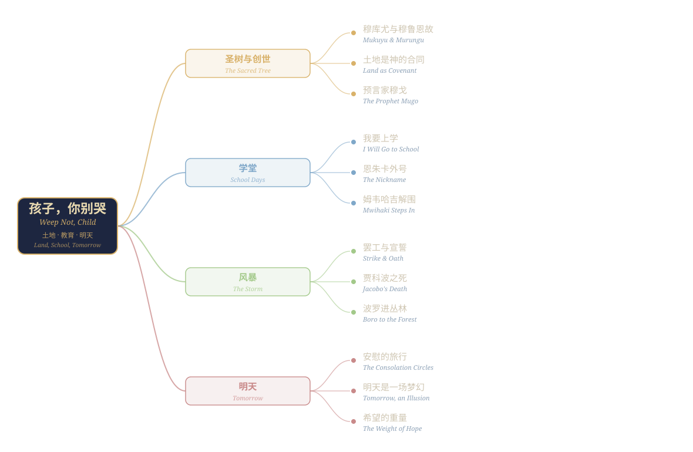

孩子，你别哭
〇 · 书籍信息
基本信息
| 书名 | 《孩子，你别哭》（Weep Not, Child）——题眼取自第十四章：革命者对人民的安慰，就像母亲对哭泣的孩子——「他唯一能给正在哭泣的孩子以安慰的，就是对未来美好生活的期望」 |
|---|---|
| 作者 | 恩古吉·瓦·提安哥（1938– ），肯尼亚最重要作家。本书是他的处女作与成名作，也是东非最早以英语写作的长篇小说之一；书中的恩约罗格正是他自己那代「靠读书改变命运」孩子的影子 |
| 背景 | 1952 年，白人殖民当局宣布「紧急状态」，茅茅起义爆发。土地是全书唯一的战场：吉库尤人的土地被白人强占，穷人沦为佃农，依附白人的非洲富翁则靠着卖同族起家 |
| 结构 | 两部：第一部「暗淡」写起义前的乡村日常；第二部「黑暗」写动员、处决与离散；中间一「插曲」像幕间曲——恩戈索在夜里独自坐着，等待一场没有把握的明天 |
| 一句话 | 土地被夺走后，一个孩子被告知「读书能拿回一切」——等他读完书，父亲死了、哥哥进了丛林、爱人不辞而别：教育的许诺与土地的许诺一起破产，而「明天朝阳一定会从东方升起」成了全书最重、也最悬的一句安慰。 |
一 · 核心主题总览
两部加一个插曲之间，埋着四条互相咬合的线索：① 土地即神学（全书地基）
吉库尤创世神话里，创世主穆鲁恩故把土地赐给吉库尤与穆姆比——土地不是财产，是人与神之间的合同。白人来了，合同单方面作废；恩戈索一家「在自己的土地上当雇工」，每一下锄头都在刨自己的神殿。理解了这层，才懂为什么「失去土地比失去儿子还痛」。
② 教育的双刃（最痛的一课）
「有文化就有一切」是全书的口号：妮约卡比节衣缩食送恩约罗格上学，因为文化「能引导人们收回被夺走的土地」。但恩古吉写的是许诺的破产：恩约罗格书读得越好，离土地越远；等他学成，世界已经先塌了——教育给了他看清灾难的眼睛，却没给他阻止灾难的手。
③ 阶级的分岔（两条路）
恩戈索与贾科波，两家从同一种贫穷出发：贾科波靠依附白人种除虫菊起家，把儿子送去英国；恩戈索守着佃农的锄头，把儿子送进学堂。一个用顺从换繁荣，一个用忍耐换体面——起义一来，两条路同时塌方：贾科波被茅茅处决，恩戈索家则被贾科波的显赫与自己的忠诚两头撕扯。
④ 希望与幻灭（题眼）
「明天朝阳一定会从东方升起」出现多次，第一次像诗，最后一次像债。恩古吉的诚实在于：他没有否定希望，他写了希望的重量——安慰一个哭泣的孩子是必要的，但「这种期望往往会成为脱离现实的一种消极因素」。这句叙述者的判词，是全书最冷也最温柔的一句。
二 · 第一段 圣树与失去—— 穆库尤 · 创世 · 预言 ——
妈妈说：你从星期一开始上学
全书从一场对话开始：妮约卡比问恩约罗格想不想上学，然后一句一句把残酷铺出来——「我们是穷苦人家」「你就要像其他孩子那样吃不上午饭了」「你不会给我丢脸吧」。孩子的回答先是心跳，最后憋出那句全书最亮的呐喊：「我要上学！」。恩古吉把阶级写在早饭上：穷人家的学费，是用一顿顿午饭换的。哥哥卡马乌已在学木工，「你学文化，我学技术」——这分工日后各自应验，也各自破产。
◆ 语言学习 · 开学 · 对话
| shabby /ˈʃæbi/ | adj. 破旧的 —— 例句：his shabby garment（破旧的粗布衫）。shabbily dressed「衣衫褴褛」 |
|---|---|
| resolute /ˈrezəluːt/ | adj. 坚决的 —— 例句：a resolute voice（「我要上学」的语气）。resolution n. 决心 |
| shilling /ˈʃɪlɪŋ/ | n. 先令 —— 例句：a ram and one hundred and fifty shillings（学木工的酬金）。东非当时通行货币 |
| apprentice /əˈprentɪs/ | n. 学徒 —— 例句：apprenticed to the carpenter（卡马乌拜师）。学艺要付一只羊——传统教育也要学费 |
句型 ｜ 「I will never disgrace you, if only you let me go to school.」——条件句表忠诚：I will… if only you let me…。「if only you let me」的恳切，是穷人孩子全部的谈判筹码；英文写作里，条件句放句首，语气最重。
父亲的故事：创世与预言
夜里全家围着灯火听恩戈索讲创世：雷电劈出黑夜、圣树穆库尤破土、创世主穆鲁恩故把土地赐给吉库尤与穆姆比——然后笔锋一转，预言家穆戈·瓦·吉比罗早说过「白人会来」。父亲讲完神话立刻落地：他自己就在白人霍尔兰斯的土地上「一边干活一边长大」。这一章是全书的神学地基：神话有多庄严，失去土地就有多亵渎——波罗那句「让预言见鬼去吧！」，是全书第一个公开撕毁安慰的人。
◆ 语言学习 · 创世 · 神话
| ancestral /ænˈsestrəl/ | adj. 祖先的 —— 例句：ancestral land（全书核心词）。ancestor n.；inherit the ancestral land |
|---|---|
| prophet /ˈprɒfɪt/ | n. 预言家 —— 例句：Mugo wa Kibiro, the prophet（穆戈）。prophecy n. 预言；勿与 profit 混淆 |
| cultivate /ˈkʌltɪveɪt/ | v. 耕种 —— 例句：cultivate the land（创世叮嘱「播种耕耘」）。cultivation n.；cultivate 也指「培养」 |
| banish /ˈbænɪʃ/ | v. 驱逐 —— 例句：driven from their land（「被赶走了」）。banish sb from…「把……逐出」；exile n. 流亡 |
习语 ｜ dawn breaks 天亮——「明天朝阳一定会从东方升起」的意象源；look forward to 盼望——恩戈索一辈子的时态，永远在进行时、从未完成时。全书把「明天」写成了一种永远未遂的时态。
三 · 第二段 学堂内外—— 恩朱卡 · 姆韦哈吉 ——
「恩朱卡」与校园的第一课
恩约罗格上学第一天就领到外号「恩朱卡」（新来的人），被同学逼着背包；替他解围的是姆韦哈吉——贾科波的女儿。「他是我的恩朱卡，怎么样！」一个女孩的一声吼，划出全书最清爽的人际边界。校园是殖民社会的缩影：谁是新来者，谁该背包，谁家的姐姐是老师——权力关系在校门口就完成了预演。老师伊萨卡用 A、E、I、O、U 教字母，把 U 讲成妇女呼救与狗吠——殖民语言教学的荒诞与鲜活，一笔写尽。
◆ 语言学习 · 校园 · 外号
| taunt /tɔːnt/ | v./n. 嘲弄 —— 例句：taunting remarks（同学起外号）。tauntingly adv.；与 mock 辨析：taunt 带挑衅 |
|---|---|
| newcomer /ˈnjuːkʌmə/ | n. 新来者 —— 例句：恩朱卡即 newcomer 之义。外号即身份政治 |
| privilege /ˈprɪvəlɪdʒ/ | n. 特权 —— 例句：the privilege of the rich（贾科波家的地位）。privileged adj.；反义 underprivileged |
| resent /rɪˈzent/ | v. 怨恨 —— 例句：resent being called names（恩约罗格的心理）。resentment n.——波罗的主情绪 |
句型 ｜ 「He is my Njugka, and no one shall touch him!」——shall 在第三人称否定句里的禁令语气（= 谁也不许）。shall not 是英语里最古老的「立法口吻」：女孩用它立法，比任何形容词都有效。
富人的孩子与穷人的孩子
两家孩子的发展路线图渐次展开：贾科波的大儿子约翰「已完成学业，要远走高飞」去英国；恩约罗格则在圣诞节被朱莉安娜的一堂「礼貌训话」当众刺伤，从此对富人家的厨房既渴望又羞耻。他为了不穿着破布衫撞见姆韦哈吉，宁可绕远路——贫穷最重的部分不是饿，是别人看你的眼光需要你自己先替他们看一遍。卡马乌的话是全章的钉子：「一个人如果没有土地就要学做生意……你上学念书不仅为了你自己，也是为了我们全家。」
◆ 语言学习 · 阶级 · 少年
| prosperous /ˈprɒspərəs/ | adj. 富裕的 —— 例句：a prosperous family（贾科波家）。prosperity n.；prosper v. |
|---|---|
| ashamed /əˈʃeɪmd/ | adj. 羞愧的 —— 例句：ashamed of his garment（绕路段）。be ashamed of；与 shy 辨析：ashamed 带道德重量 |
| plantation /plænˈteɪʃn/ | n. 种植园 —— 例句：pyrethrum plantation（除虫菊地）。贾科波是「多年来唯一被允许种除虫菊的非洲人」 |
| linger /ˈlɪŋɡə/ | v. 徘徊，磨蹭 —— 例句：linger on the way home（懒学生消磨时间）。linger over「慢慢做」 |
习语 ｜ fly far away 远走高飞——约翰留学的写法；those who work the land own nothing, those who own the land never work——全书反讽的公式（干活的人没有土地，有土地的人不干活）。学英语议论文，这个对仗结构直接可用。
四 · 第三段 风暴—— 罢工 · 宣誓 · 丛林 ——
罢工、宣誓与父亲的困境
第二部「黑暗」开篇即是全面动员：罢工、宣誓仪式、白天躲藏夜里集会。恩戈索被夹在中间——不宣誓，儿子波罗会继续用谴责的眼光看他；宣誓，他又觉得由孩子主持仪式丢尽父亲的脸。恩古吉在这里写出革命最真实的一面：它不是广场上的欢呼，是每一个家庭内部权力关系的重新洗牌——传统父权与斗争伦理第一次正面相撞，而父亲输了。全家人连「再见」都不敢说，因为怕它一语成谶。
◆ 语言学习 · 动员 · 家庭
| oath /əʊθ/ | n. 誓言 —— 例句：take the oath（宣誓仪式）。复数 oaths；swear an oath 同义 |
|---|---|
| strike /straɪk/ | n. 罢工 —— 例句：go on strike（罢工线）。strike 又作 v. 击打——一词的两种暴力 |
| detain /dɪˈteɪn/ | v. 拘留 —— 例句：be detained without trial（紧急状态常态）。detention n.；与 arrest 辨析 |
| farewell /ˌfeəˈwel/ | n. 告别 —— 例句：no more goodbyes（「再也不说再见」）。bid farewell to sb |
句型 ｜ 「They never said goodbye any more, lest the word itself come true.」——lest + 虚拟（唯恐……成真）：书面语中最庄重的忌讳表达。用语法本身写恐惧——一个连词就装下了整个时代的紧张。
贾科波之死与波罗进丛林
风暴的两端各落一刀：依附白人的贾科波被茅茅战士处决——他一生精算的「安全路线」死在安全路线上；恩戈索家则因与贾科波的旧怨被视为叛徒嫌疑人，白人的巡逻与同族的怀疑两头夹击。波罗进丛林、卡马乌被捕、家被搜索——恩古吉拒绝把任何一方写成干净的英雄：处决有它的逻辑，恐惧有它的道理，每个人都既受害又负债。恩戈索的孤独因此最重：旧秩序塌了，新秩序没给他留位置。
◆ 语言学习 · 处决 · 丛林
| execution /ˌeksɪˈkjuːʃn/ | n. 处决 —— 例句：Jacobo's execution（事件）。execute v.；executioner n. 刽子手 |
|---|---|
| forest /ˈfɒrɪst/ | n. 丛林 —— 例句：the men of the forest（茅茅战士）。进丛林=起义，全书的核心转喻 |
| vengeance /ˈvendʒəns/ | n. 复仇 —— 例句：with vengeance（清算）。take vengeance on；avenge v. 同族 |
| suspect /səˈspekt/ | v./n. 怀疑；嫌疑人 —— 例句：treated as suspects（被搜查）。suspected of doing |
习语 ｜ caught in the crossfire 陷入交叉火力——恩戈索家的处境；pay the price 付出代价——两条路线各自的账单。恩古吉的叙事公式：没有干净的立场，只有各自的价格。
五 · 第四段 别哭与明天—— 梦幻 · 朝阳 ——
「我的明天将是一场梦幻」
混乱中恩约罗格与姆韦哈吉最后一次长谈。他念完中学、家里却接连塌方，少年把一生的期待说成一句话：「现在只有你才值得我留恋……我知道，我的明天将是一场梦幻。」姆韦哈吉哭了，又用他教她的话还给他：「你不是告诉过我，明天朝阳一定会从东方升起吗？我想会是这样的。」安慰的话被原路退还——发明的安慰救不了发明者本人。恩古吉让这一对少年在各自的阶级里互相递火把，火把的名字叫「明天」。
◆ 语言学习 · 诀别 · 对话
| illusion /ɪˈluːʒn/ | n. 幻觉，幻梦 —— 例句：my tomorrow will be an illusion（「梦幻」原义）。disillusion n. 幻灭——全书下半场的主题词 |
|---|---|
| despair /dɪˈspeə/ | n. 绝望 —— 例句：in despair（恩戈索的暮年）。despair of doing「对……不抱希望」 |
| console /kənˈsəʊl/ | v. 安慰 —— 例句：console the weeping child（题眼动词）。consolation n.；与 comfort 辨析 |
| dawn /dɔːn/ | n. 黎明 —— 例句：the sun will rise tomorrow（朝阳意象）。dawn on sb「恍然明白」一词两义 |
句型 ｜ 「You told me the sun would rise tomorrow. I think it will.」——间接引语回环：把他给她的安慰，用她的口再还给他。对话的最高技巧是让台词旅行一圈再回来；写作时让人物互为回声。
孩子，你别哭：希望的重量
结局没有反转的恩典：恩约罗格被捕获释，父亲与贾科波先后死去，哥哥们的命运悬在丛林与监狱之间。全书最后停在少年的一次远望——他仍然相信未来，而叙述者补上那句判词：他不懂「这种期望往往会成为脱离现实的一种消极因素」。恩古吉不没收希望，他给希望标了价：安慰孩子是必要的，但拿希望代替行动，就成了麻醉。孩子你别哭——哭不解决问题，但禁止哭的时代更不能信。这一页留给读者自己称重。
◆ 语言学习 · 收束 · 主题
| tender /ˈtendə/ | adj. 温柔的 —— 例句：tender consolation（题眼句的语气）。tenderly adv.；tender v.「递交」一词两义 |
|---|---|
| burden /ˈbɜːdn/ | n. 负担 —— 例句：the burden of expectation（期望成负担）。burden sb with sth |
| liberate /ˈlɪbəreɪt/ | v. 解放 —— 例句：Kenya's independence（1963 年独立）。liberation n.；延伸：liberate the mind「解放头脑」 |
| inherit /ɪnˈherɪt/ | v. 继承 —— 例句：inherit the land（未竟的合同）。inheritance n.；heir n. 继承人 |
习语 ｜ weep not 别哭——祈使否定的最短形式，书名即文体：温柔与命令各占一半；the sun will rise tomorrow 明天朝阳照常升起——安慰语的通用模板，全书证明：模板不会失效，但模板不能代替行动。
六 · 人物图鉴与成长弧线—— 主角配角 · 一张表看穿 ——
主要人物
恩约罗格 Njoroge——全书视角：穷人家的儿子、全家与全村的希望寄托。弧线：喊出「我要上学」→ 学业一路顺遂 → 家国同时崩塌 → 「我的明天将是一场梦幻」。他是肯尼亚那一代「教育改变命运」神话的第一个诚实的证人。
恩戈索 Ngotho——父亲：两个妻子的丈夫、白人土地上的佃农。一生等待「预言成真、土地归还」；在罢工与宣誓的撕裂中失去家庭权威，最终带着对两个世界的债务死去。他是「忍耐」这种美德破产的全程见证。
妮约卡比 Nyokabi——母亲：促成恩约罗格上学的决定性人物。「穷苦人家」四个字由她说出，学费由她用蓖麻子一颗颗挣出。全书最清醒的投资人：她赌的不是文化，是儿子的命。
波罗 Boro——长子：战争的幸存者（兄弟死于大战），「让预言见鬼去吧！」的喊话人，后进丛林成为茅茅战士。他替全书说出第一句真话，也第一个付出真话的代价。
贾科波 Jacobo——依附白人的富翁：唯一获准种除虫菊的非洲人，把儿子送去英国。被茅茅处决。他的死证明：在殖民结构里，「合作」不是路线，是倒计时。
次要人物（功能位）
| 姆韦哈吉 Mwihaki | 贾科波之女、恩约罗格的同学与爱恋：一声「他是我的恩朱卡」立起全书最干净的边界；结尾把安慰原路退还——阶级两端的两个孩子，互为彼此的火把与债主 |
|---|---|
| 卡马乌 Kamau | 学木工的哥哥：「你学文化，我学技术」的另一半分工，后被捕——传统学徒制的破产同样真实 |
| 霍尔兰斯 Mr Howlands | 白人农场主：把土地当生命，「我的家就在这里嘛！」——殖民者用一句家常话宣布永久产权 |
| 伊萨卡老师 | 教会学校的教师：用 A-O-U 教字母，也用棍棒立规矩——殖民教育的双面在他身上合并同类项 |
七 · 主题与象征—— 每个道具都在说话 ——
| 圣树穆库尤 ↔ 土地神学 | 雷夜破土、根深叶茂的创世之树：土地是人与神的合同——白人夺的不是地，是合同的正本 |
|---|---|
| 柏油马路 ↔ 永远到不了的远方 | 路面上的「小湖泊」幻影，可望不可即：它通向都市与大海，唯独不通向失地 |
| 学校 ↔ 教育的许诺 | 「有文化就有一切」：许诺给了孩子翅膀，没给他落点——书读得越好，摔得越清醒 |
| 宣誓仪式 ↔ 新伦理 | 由孩子主持父亲宣誓：传统父权与斗争伦理的权力交接——革命先革的是家里 |
| 丛林 ↔ 无名的选择 | 波罗们的去处：不写战斗，只写「进了丛林」——叙述的沉默，是恐惧最准确的形状 |
| 朝阳 ↔ 安慰的债务 | 「明天朝阳一定会从东方升起」：第一次像诗，最后一次像债——安慰是必要的，拿它代替行动就成了麻醉 |
八 · 写作手法赏析—— 怎么写，就能怎么学 ——
① 神话框架的现实转写
创世故事与殖民现实并置：先讲圣树与契约，再讲佃农与锄头——用神话给现实定价，失去才有重量；写作可学：先立价值坐标系，再写损失。
② 家庭内部的战争
罢工、宣誓、父子冲突：大历史全部经过一张饭桌折射——不写广场写饭桌，是现实主义把历史写成体温的方法。
③ 短句与呐喊
「我要上学！」「让预言见鬼去吧！」——全书关键时刻全部交给极短句。情绪的顶点用最短的句子，是英语写作的铁律。
④ 安慰的回环结构
「朝阳」意象多次出现：赠予—接受—退还——让同一句话在人物间旅行，主题就有了回声室。
⑤ 不判决的结局
恩约罗格仍有希望，叙述者却补上「消极因素」的判词——把裁决权交给读者，是严肃文学的收束伦理。
九 · 名段欣赏—— 原文精读 · 逐段赏析 ——
十 · 金句摘录—— 15 条 · 中英对照 · 带出处 ——
"我要上学！"—— 第一部 · 第一章
"我们是穷苦人家，你知道吗？……你不会因某一天逃学而给我丢脸吧？"—— 第一部 · 第一章
"兄弟，我正在学木工，不能半途而废。……你学文化，我学技术，以后我们就可以过上好日子。"—— 第一部 · 第一章
"可是，不，实际上绝不是这样，土地没有了，我的父亲和其他的乡亲们已经从我们原来的土地上被赶走了。"—— 第一部 · 第二章 · 创世故事
"让预言见鬼去吧！"—— 第一部 · 第二章 · 波罗
"我的穆鲁恩故，我是多么希望那一天早日来到啊！"—— 第一部 · 第二章 · 恩戈索
"难道这些人永远不走吗？吉库尤以往的预言家不是说过，这些人怎么来最终就会怎么去？"—— 第一部 · 第三章
"有文化就有一切。"—— 第一部 · 第四章
"一个人如果没有土地就要学做生意。……你上学念书不仅为了你自己，也是为了我们全家。"—— 第一部 · 第四章 · 卡马乌
"现在，家里的人每天早晨外出时，再也不说「再见」了，因为他们生怕会像话语本身的含意那样彼此再也见不着了。"—— 第二部 · 罢工岁月
"沉沉的黑夜常常为阳光普照的白天开道。夜里人们睡觉时都希望，而且完全坚信明天朝阳一定会从东方升起。"—— 第二部 · 第十一章
"他唯一能给正在哭泣的孩子以安慰的，就是对未来美好生活的期望。然而，他不懂得这种期望往往会成为脱离现实的一种消极因素。"—— 第二部 · 第十四章
"面对这种毫无希望的、无休无止的「明天」，恩约罗格第一次感到自己软弱无能。"—— 第二部 · 第十六章
"姆韦哈吉，现在只有你才值得我留恋……因为我知道，我的明天将是一场梦幻。"—— 第二部 · 第十八章
"你不是告诉过我，明天朝阳一定会从东方升起吗？我想会是这样的。"—— 第二部 · 第十八章 · 姆韦哈吉
十一 · 拓展阅读—— 原文 · 词条 · 译文 ——
作者与三部曲
- Ngũgĩ wa Thiong'o — Wikipedia —— 生平：从英语写作到狱中改用基库尤语写作——语言即立场
- Weep Not, Child — Wikipedia —— 1964 年处女作；与《一粒麦种》《大河两岸》构成早期三部曲
历史背景
- Mau Mau Uprising — Wikipedia —— 1952–1960 茅茅起义：本书的全部地气
- A Grain of Wheat — Wikipedia —— 恩古吉成熟期的代表作：同样的土地，更复杂的人性账目
十二 · 个人感悟与心得—— 三点心得 ——
上学 · 预言 · 安慰的边界
这本书最让我反复掂量的，是「教育许诺」的破产方式：恩约罗格没有读到假书、没有遇到坏老师，每一步都走对了——然后世界塌了。「每一步都走对」与「结局崩溃」可以同时成立，这是这本书对鸡汤叙事最彻底的一击。它不否定读书，它否定的是把读书当成土地的替代品。 安慰的经济学是第二个收获。「明天朝阳一定会从东方升起」在书里旅行了三次：作为诗、作为信仰、作为退还的债。安慰不是假的，但安慰有它的适用边界——越过边界，它就从止痛片变成延期支票。把这个区别讲清楚，是这本书比口号文学高级的地方。 读英文原文的话，这册的门槛意外地低：恩古吉写作时英语还是他的「第二语言」，句式规整、词汇克制，反而成了精读的好材料。难的不是词，是每个短句背后那片你陌生的土地——先读译者序补足历史，再进正文，每一句都会重起来。—— 恩古吉后来在狱中改用母语写作，他说：语言承载文化，文化承载价值。（Language carries culture, and culture carries the entire body of values.）
十三 · 一页速查（复习用）
| 全书骨架 | 第一部「暗淡」：开学与创世故事 ｜ 插曲：夜与等待 ｜ 第二部「黑暗」：罢工、宣誓、处决、离散 |
|---|---|
| 两大路线 | 贾科波：依附白人 → 处决 ｜ 恩戈索：忍耐等待 → 家破——两条路同时塌方 |
| 核心命题 | 教育的许诺与土地的许诺一起破产；安慰是必要的，代替行动就成了麻醉 |
| 必背表达 | take the oath / go on strike / ancestral land / lest the word come true / dawn breaks / weep not |
| 一句话总结 | 「明天朝阳一定会从东方升起」——全书最重的一句安慰，也是全书最悬的一张支票 |
十四 · 全书思维导图—— 一图纵览 ——

一图纵览全书骨架 · 中英双语对照 · 手机端可左右滑动查看全图